113 年國中教育會考社會試題與答案
這一頁是民國 113 年國中教育會考社會的整份歷屆試題，共 54 題，題目與標準答案出自心測中心 會考歷屆試題（依著作權法 §9，考試試題不受著作權保護），其中 54 題附有詳解。以下逐題列出題幹、選項與答案；要計時作答或記錄成績，請用線上練習。
線上作答這一科 →
全部 54 題
第 1 題
「格外品」意指市場規格之外但品質無虞的農產品，例如規格不符或賣相不佳。格外品會被農民分享給親友或作為肥料跟飼料，盛產時還可能出現遭大量棄置的問題。下列何項作法較能有效解決上述問題？
- （A）推動從產地到餐桌的理念，降低食物里程
- （B）善用食品加工，以利農產品的保存與食用
- （C）鼓勵農民改採有機農法，提高農產品售價
- （D）種植基因改造作物，增加單位面積的產量
答案：（B）
詳解與考點
正解：格外品品質無虞卻因規格或賣相不佳而在盛產時遭棄置，關鍵是處理已產生的過剩農產品。善用食品加工製成果汁、果乾等，可延長保存並增加食用方式，B 最能直接減少浪費。
A：降低食物里程著重縮短產地到餐桌的運輸距離，未處理格外品遭棄置，錯誤。
C：有機農法與提高售價不能解決既有格外品的保存與去化，錯誤。
D：增加單位面積產量可能使過剩更多，未處理格外品問題，錯誤。
本題考點：食物浪費的改善——先辨認問題是生產過剩、運輸或保存，再選擇對應作法；品質無虞的格外品可透過加工延長保存並提高利用。
第 2 題
由波蘭、匈牙利、斯洛伐克、捷克組成的維謝格拉德集團，近年來約有20% 至30%的商品出口至德國，因此當德國經濟成長減緩時，該集團國家的產業可能衰退。根據上文，集團成員國最可能採取下列何項政策，以減少產業衰退所帶來的負面影響？
- （A）加速產業創新轉型及尋找新的貿易夥伴
- （B）採取促使各國貨幣升值的政策以利出口
- （C）退出歐盟並從非洲國家引進廉價勞動力
- （D）鼓勵國內勞力密集產業外移至西歐國家
答案：（A）
詳解與考點
正解：維謝格拉德集團有約20%至30%商品出口德國，德國成長減緩會使其產業受連帶影響，關鍵是對單一市場依賴過高。加速產業創新轉型並尋找新貿易夥伴，可分散市場風險，A 正確。
B：貨幣升值會使出口商品價格相對提高，通常不利出口，錯誤。
C：退出歐盟及引進廉價勞動力無法直接降低對德國市場的依賴，錯誤。
D：將勞力密集產業外移至西歐，不能開拓新市場，反而可能維持對歐洲單一區域的依賴，錯誤。
本題考點：貿易依存與風險分散——出口集中於特定市場時，該市場景氣變動會傳導風險；可用產業轉型與開拓多元貿易夥伴降低衝擊。
第 3 題
臺灣某些聚落是以相對位置來命名，例如北門。下列為某地區兩個地名由來的描述：在地勢較高處屯兵設營，故稱為上營盤，其西北山腳處則稱為營盤腳，又名下營盤。圖（一）為營盤腳附近的等高線地形圖，根據上述及圖中資訊判斷，上營盤最可能位在圖中何處？
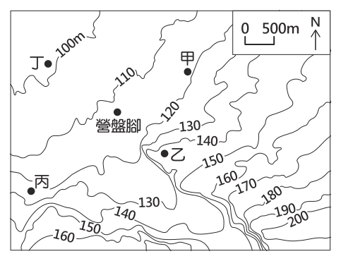
- （A）甲
- （B）乙
- （C）丙
- （D）丁
答案：（B）
詳解與考點
正解：題幹說上營盤在營盤腳的東南、且位於較高處，必須同時套用相對方位與等高線高低判讀。B 位在營盤腳東南方，且等高線數值較大、地勢較高，故 B 為正解。
A：甲不在營盤腳東南方，且不符合上營盤應位於較高處的條件，錯誤。
C：丙雖須依圖判讀位置，但未同時符合營盤腳東南與地勢較高兩項條件，錯誤。
D：丁位於營盤腳北或西北側，方位與題意不符，錯誤。
本題考點：等高線地形圖——等高線數值較大表示海拔較高；相對位置判讀——先由題述定出東南方向，再以高度條件篩選位置。
第 4 題
圖(二)為某網站繪製的世界語言使用圖，呈現全球23種使用人數超過5,000萬人的語言，其中使用人數排第五名的語言主要分布區為下列何者？
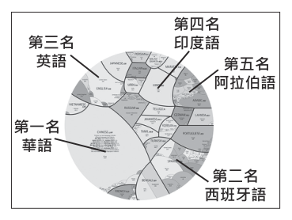
- （A）西亞、北非
- （B）東亞、南亞
- （C）南歐、南美洲
- （D）北美洲、大洋洲
答案：（A）
詳解與考點
正解：圖中使用人數排第五的語言是阿拉伯語，其主要使用區是西亞與北非的阿拉伯世界，A 為正解。
B：東亞、南亞主要分布華語、印度語等語言，並非阿拉伯語的核心使用區，錯誤。
C：南歐、南美洲以西班牙語為主，錯誤。
D：北美洲、大洋洲以英語為主，錯誤。
本題考點：世界主要語言分布——先辨識語言名稱，再對照其核心使用區；阿拉伯語——主要分布於西亞與北非。
第 5 題
彰化平原上曾有一個稱為「七十二庄」的組織，由漳州人和客家人聯合成立，他們透過共同的宗教活動，強化組織內部的連結，以抵抗鄰近泉州人的勢力。上述組織的成立，最可能與下列哪一現象有關？
- （A）鄭氏推行軍屯制度
- （B）清代民間械鬥頻傳
- （C）清朝政府開山撫番
- （D）日本鎮壓漢人抗日
答案：（B）
詳解與考點
正解：題幹中的七十二庄由漳州人與客家人聯合，以宗教活動強化連結並對抗泉州人，關鍵是不同祖籍族群的衝突。這是清代臺灣常見的漳泉、閩客械鬥現象，故 B 為正解。
A：鄭氏軍屯制度屬鄭氏時期的屯墾措施，非清代祖籍分類械鬥，錯誤。
C：開山撫番主要涉及清政府進入山地與原住民族的政策，與漳、泉、客族群衝突不符，錯誤。
D：鎮壓漢人抗日屬日治時期，年代不符，錯誤。
本題考點：清代臺灣社會——移民依祖籍與方言形成群體；械鬥辨識——漳州、泉州與客家人之間的對抗，應聯想到清代民間械鬥。
第 6 題
圖(三)為一首歌曲部分歌詞的翻譯，其內容聚焦於中國歷史上某一事件。歌詞中「在東方的血腥戰爭」，最可能是指下列何者？
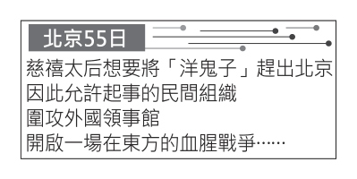
- （A）蒙古大軍南下滅宋，成功入主中國
- （B）英國為鴉片貿易問題出兵攻打中國
- （C）八個國家組成聯軍向中國發動攻擊
- （D）國民政府誓師北伐，終結軍閥割據
答案：（C）
詳解與考點
正解：歌詞線索為「慈禧太后」、「允許民間組織起事」與「圍攻外國領事館」，指向義和團事件及其後的八國聯軍。C 八個國家組成聯軍向中國發動攻擊符合這些線索，故 C 為正解。
A：蒙古大軍滅宋發生於元代，沒有慈禧、義和團或外國領事館線索，錯誤。
B：鴉片戰爭主要是英國對中國作戰，且時間早於義和團事件，錯誤。
D：北伐是國民政府對軍閥的軍事行動，不是清末對外戰爭，錯誤。
本題考點：清末事件辨識——慈禧、義和團與圍攻外國使館是八國聯軍之役的關鍵線索；時序判讀——鴉片戰爭早於義和團，北伐則在清朝覆亡後。
第 7 題
古代人們在繪製地圖時，通常會將自己所處的區域放在地圖中央。圖(四)是某地區出土的古世界地圖及其說明，該地區當時所使用的文字，最可能為下列何者？
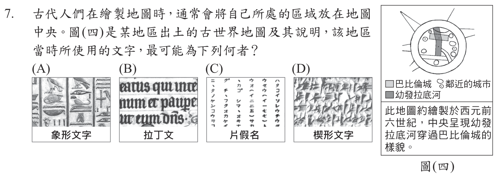
本題選項為上圖中的 A／B／C／D，請對照圖片作答。
答案：（D）
詳解與考點
正解：題幹提到「巴比倫城」與「幼發拉底河」，可鎖定美索不達米亞的兩河流域文明；當地的蘇美、巴比倫人使用楔形文字，故 D 為正解。
A：象形文字是古埃及所用文字，地理區域不符。
B：拉丁文與古羅馬相關，時代與地域都不符。
C：片假名是日本文字，與兩河流域無關。
本題考點：兩河流域文明與文字——看見巴比倫、幼發拉底河等線索，即連結美索不達米亞與楔形文字；文明比對——以地點與時代同時核對文字來源。
第 8 題
「某國在十九世紀末設置一個機構，最初是顧及戰後返國的軍人，身上可能帶有病菌，因而先送往此處進行消毒及隔離，後來也在此處收容戰爭俘虜。在該國曾參與的甲午戰爭、第一次世界大戰、九一八事變，乃至於太平洋戰爭，此機構都曾發揮隔離檢疫的功能。」上述「某國」最可能是下列何者？
- （A）美國
- （B）德國
- （C）日本
- （D）法國
答案：（C）
詳解與考點
正解：題幹列出甲午戰爭、九一八事變與太平洋戰爭，這些都是日本參與的戰事，因此設置隔離檢疫機構的「某國」是日本，C 為正解。
A：美國未參與甲午戰爭，不能符合全部戰事線索。
B：德國未參與九一八事變，且題幹的戰事組合不符。
D：法國未參與九一八事變，也不符合題幹所列戰事。
本題考點：日本近代戰爭史——以同一國家是否參與題幹列出的全部戰事判斷；交叉比對——甲午戰爭、九一八事變、太平洋戰爭可共同鎖定日本。
第 9 題
以下是學者對歷史上臺灣的土地開發模式，所做出的分析：「十七世紀時，『甲』透過提供土地、耕牛、資金借貸，招募『乙』修築城堡、耕種稻米與甘蔗。甲、乙兩者之間雖然互相依賴，但甲常透過強制力懲罰不願受約束的乙。」上述「甲」與「乙」，最可能是下列何者？
- （A）荷蘭聯合東印度公司與漢人
- （B）清帝國與福建、廣東的漢人
- （C）顏思齊集團與沿海的原住民
- （D）鄭氏政權與大肚王國原住民
答案：（A）
詳解與考點
正解：題幹的十七世紀、提供土地與耕牛、招募耕種稻米和甘蔗，正是荷蘭聯合東印度公司在臺灣招募漢人開墾的模式；甲為荷蘭聯合東印度公司，乙為漢人，故 A 為正解。
B：清帝國於1683年後統治臺灣，但清帝國與來自福建、廣東的漢人之間，並非題幹所述由殖民公司提供土地、耕牛與資金借貸，招募其種植稻米、甘蔗的開發模式，錯誤。
C：顏思齊集團主要招募漢人移民，非題幹所述提供土地、耕牛與借貸的統治模式。
D：鄭氏政權與大肚王國原住民並非招募耕種稻米、甘蔗的關係。
本題考點：荷蘭時期臺灣開發——十七世紀荷蘭聯合東印度公司提供土地、耕牛與資金招募漢人開墾；開發模式判讀——比對提供生產資源者、受招募者與兩者關係，不能僅憑同屬十七世紀作答。
第 10 題
圖(五)是老師在黑板上解釋某法律的部分內容，根據圖中內容判斷，下列何者是該法律最主要的立法目的？
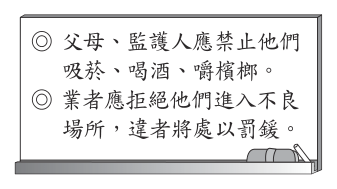
- （A）避免家庭暴力事件的發生
- （B）處理兒童及少年犯罪事件
- （C）確保兒童及少年身心發展
- （D）維護社會秩序及善良風俗
答案：（C）
詳解與考點
正解：圖中法律內容禁止兒童及少年吸菸、喝酒、嚼檳榔，並限制進入不良場所，關鍵是預防危害其健康與成長的行為。其主要立法目的在確保兒童及少年身心發展，C 正確。
A：家庭暴力事件的防治是家庭暴力防治相關規範的重點，和題示限制事項不同，錯誤。
B：處理兒童及少年犯罪事件著重少年司法制度，非題示保護措施的核心，錯誤。
D：維護社會秩序及善良風俗的範圍較廣，題示規範直接保護的是兒少身心發展，錯誤。
本題考點：兒少保護的立法目的——由限制對象與限制行為判斷保護法益；若規範著重避免菸酒、檳榔與不良場所危害，核心是兒少身心健康與發展。
第 11 題
表（一）是小津整理的交易媒介比較表，表中甲、乙最可能為下列哪一組合？
表（一）| 交易媒介 | 甲 | 乙 |
|---|
| 特色一 | 可直接支付各項消費 | 須事先存入足夠金額，並搭配特定設備才能使用 |
| 特色二 | 由國家發行並賦予價值 | 多由民間企業發行 |
| 特色三 | 可能會面臨兌換零錢的困擾 | 免去購物找零錢的困擾 |
- （A）商品貨幣與儲值卡
- （B）商品貨幣與信用卡
- （C）法定貨幣與儲值卡
- （D）法定貨幣與信用卡
答案：（C）
詳解與考點
正解：依表（一），甲可直接支付、由國家發行並賦予價值，且可能需要兌換零錢，屬法定貨幣；乙須先存入足夠金額、搭配特定設備、多由民間企業發行，屬儲值卡。故甲、乙為法定貨幣與儲值卡，C 正確。
A：甲不是商品貨幣，因表中明示其由國家發行並賦予價值；商品貨幣本身具有實用價值，錯誤。
B：乙不是信用卡，信用卡是先消費後付款，不須先儲值，錯誤。
D：乙的特徵符合儲值卡而非信用卡，錯誤。它看起來對，是因為兩者都能減少找零，但付款時點不同。
本題考點：交易媒介辨識——法定貨幣由國家發行並具法定價值；儲值卡須先存入金額；信用卡採先消費、後付款，須以付款方式判別。
第 12 題
新聞報導：大法官解釋第748號解釋文，宣告《民法》中未有保障同性婚姻之規定，違反《憲法》保障人民平等權與婚姻自由之意旨，相關機關應在兩年內完成法律修正或制定，若屆時未完成修法，同性二人可依現行《民法》規定辦理結婚登記。上述內容顯示出我國《憲法》的哪一項特性？
- （A）規範範圍最廣
- （B）法律位階最高
- （C）修改程序困難
- （D）條文內容簡要
答案：（B）
詳解與考點
正解：題幹中大法官以《憲法》保障的平等權與婚姻自由為依據，宣告《民法》未保障同性婚姻的規定違憲，並要求修法或制定法律；這表示一般法律不得牴觸《憲法》，顯示《憲法》的法律位階最高，故 B 為正解。
A：《憲法》確實規範國家基本制度與人民權利，但題幹著重的是以憲法審查並限制《民法》的效力，不是規範範圍，錯誤。
C：修憲門檻較高是剛性憲法的特性，題幹沒有討論修憲門檻，錯誤。
D：條文內容簡要與違憲審查無直接關係，錯誤。
本題考點：憲法最高性——法律若牴觸憲法，須修正、廢止或不得適用；違憲審查判讀——題幹出現大法官宣告一般法律違憲時，應連結到憲法位階高於法律。
第 13 題
小央花費數萬元購買限量模型，將商品帶回家後遭到父母反對，並立刻陪同小央返回店家要求退貨。根據我國法律規定，就小央的年齡而言，此項契約須經法定代理人同意才具備效力，因此店家只能辦理退貨。根據上述內容判斷，下列何者最可能是訂立該規定的用意？
- （A）維護無行為能力人的權益
- （B）矯正未成年人的犯罪行為
- （C）保護限制行為能力人的權益
- （D）預防未成年人從事犯罪行為
答案：（C）
詳解與考點
正解：小央購買數萬元模型的契約須經法定代理人同意才有效，關鍵是未成年人進行重大財產行為受到限制。此規定是為保護限制行為能力人的權益，C 正確。
A：無行為能力人是未滿7歲者或受監護宣告者；題幹情形是須經同意才有效，屬限制行為能力制度，錯誤。
B：規範契約效力是民事行為能力問題，不是矯正犯罪行為，錯誤。
D：題幹沒有犯罪情節，規定目的也不是預防犯罪，錯誤。
本題考點：限制行為能力——未成年人從事重要法律行為時，須有法定代理人同意以保護其權益；判斷時以是否完全不能自行為有效意思表示，區分無行為能力與限制行為能力。
第 14 題
我國原本允許進口新鮮山竹，但2003年時，因新鮮山竹有引進害蟲的疑慮，所以政府禁止進口，於是市面上只能買到進口的冷凍山竹。2019年4月，政府公告將開放經殺蟲處理的新鮮山竹進口；同年9月，新鮮山竹上架銷售，雖然價格高於冷凍山竹，仍在短時間銷售一空，後來各店家也持續補貨販售。根據上述內容判斷，政府的開放政策帶來下列何項影響？
- （A）貿易出超金額因而擴大
- （B）農業出口總額因而上升
- （C）購物意願因價格變化而提高
- （D）產品選擇因而變得更加多元
答案：（D）
詳解與考點
正解：開放經殺蟲處理的新鮮山竹進口後，市場原有冷凍山竹，又新增新鮮山竹，關鍵是同類商品可選形式增加。政府政策使產品選擇更加多元，D 正確。
A：開放進口增加的是進口商品，不能據此推論貿易出超擴大，錯誤。
B：題幹討論新鮮山竹進口，沒有農業出口總額上升的資訊，錯誤。
C：新鮮山竹價格高於冷凍山竹，銷售熱絡不是因為價格降低，錯誤。
本題考點：國際貿易與消費選擇——進口限制放寬會增加市場供應的商品種類；不可把進口增加誤推為出口或貿易出超增加。
第 15 題
圖(六)顯示臺灣某一沿海地區的土地利用變遷，根據圖中資訊判斷，下列關於該地區土地利用轉變的敘述何者正確？
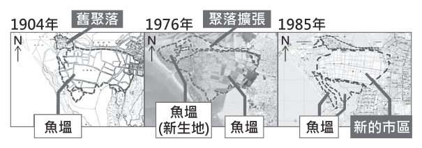
- （A）可利用的土地因海岸侵蝕嚴重而減少
- （B）魚塭的面積變化呈現先減後增的趨勢
- （C）新的市區用地主要是由魚塭填土而來
- （D）聚落的範圍主要是由南向北逐漸擴張
答案：（C）
詳解與考點
正解：題幹要依土地利用變遷圖判讀來源與去向；圖中舊聚落外側先形成魚塭的新生地，之後該區轉為新的市區，顯示新市區主要由魚塭填土開發而來，故 C 為正解。
A：圖示反映海岸淤積形成新生地，可利用土地增加，不是海岸侵蝕嚴重而減少，錯誤。
B：魚塭面積的變化不呈先減後增，錯誤。
D：聚落擴張方向與圖示不符，錯誤。它看起來對，是因為新市區確有向海側發展，但不能把圖示方向誤讀為由南向北。
本題考點：土地利用變遷判讀——依不同時期圖例比對同一地點的用途；海岸地形判斷——出現新生地表示淤積造陸，不能誤判為侵蝕減地。
第 16 題
隨著醫療衛生的進步，人類的平均壽命正逐漸提高，圖（七）呈現 1990 年與 2019 年全球各區域平均壽命與人口數的變化，圖中未標示的區域有「中南美洲」、「歐洲及北美洲」、「東亞及東南亞」、「漠南非洲」。依據各區域的經濟發展及醫療衛生條件判斷，圖（七）中甲、乙、丙、丁何者最可能為漠南非洲？
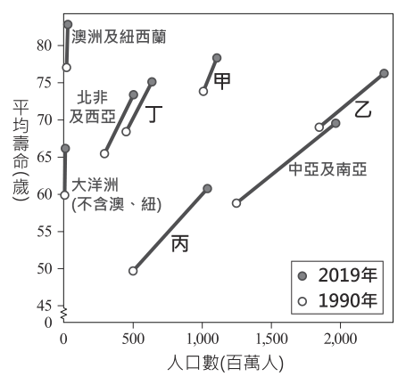
- （A）甲
- （B）乙
- （C）丙
- （D）丁
答案：（C）
詳解與考點
正解：題幹要求結合經濟發展與醫療衛生條件判讀；漠南非洲的平均壽命相對較低，圖中丙的平均壽命最低，約50至60歲且人口眾多，最符合漠南非洲，故 C 為正解。
A：甲的平均壽命較高，不符合漠南非洲相對較低的醫療衛生與平均壽命條件，錯誤。
B：乙的平均壽命也較高，較可能是發展程度較高的區域，錯誤。
D：丁的平均壽命居中，並非圖中最低者，不是最符合的區域，錯誤。它看起來對，是因為各區平均壽命都在提高，但本題比較的是各區相對高低而非是否進步。
本題考點：散布圖判讀——先讀取縱軸平均壽命與點的位置，再比對各區特徵；區域發展差異——醫療衛生與經濟條件相對落後的區域，平均壽命通常較低。
第 17 題
日本某地因位處冬季季風迎風面，季風經日本海挾帶豐沛水氣形成大量降雪，待降雪季節結束，積雪剷除後的道路兩側留下垂直壁立高達十多公尺的雪壁，吸引大量遊客前來。上述雪壁景色最可能位於圖（八）中何地？
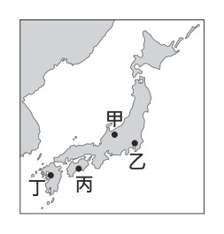
- （A）甲
- （B）乙
- （C）丙
- （D）丁
答案：（A）
詳解與考點
正解：題幹的關鍵是冬季季風先經日本海挾帶水氣，並在迎風面形成大量降雪；日本本州面向日本海的一側最符合此條件，甲位於日本海側，故 A 為正解。
B：位於太平洋側或背風面，冬季季風越過山地後水氣減少，較不易形成大量積雪。
C：位於太平洋側或背風面，不符日本海水氣在迎風面降雪的條件。
D：位於太平洋側或背風面，冬季降雪較少。它看起來可能對，是因為日本冬季整體偏冷，但大量降雪還須同時具備日本海水氣與迎風面地形。
本題考點：冬季季風與地形降雪——氣流經暖海面可增添水氣，遇山地抬升的迎風面易降雪；日本海側冬季多雪，太平洋側多為背風面。
第 18 題
中國某行政區有一新建鐵路於 2022 年 6 月通車，與原有鐵路部分路線共同構成一環形鐵路，其路線圖如圖（九）所示。該新建鐵路通車後為了維持其正常運行，根據沿線環境特色判斷，最可能需要進行下列何種維護措施？
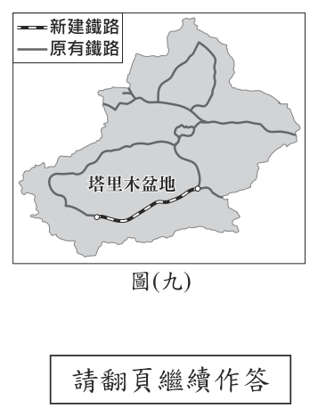
- （A）加強防颱工程，預防強風及豪雨損壞鐵路設備
- （B）設置加熱系統，克服土壤結凍造成的軌道變形
- （C）種植固沙植物，防止風沙危及列車行駛的安全
- （D）興建河岸堤防，避免河流定期氾濫而淹沒鐵軌
答案：（C）
詳解與考點
正解：新建鐵路與既有鐵路構成環形路線，位置繞行塔里木盆地；盆地內有塔克拉瑪干沙漠，環境乾燥且多風沙。因此應種植固沙植物，防止風沙危及列車行駛安全，故C為正解。
A：防颱工程主要因應東南沿海的強風與豪雨，不合西北乾燥沙漠環境，錯誤。
B：土壤結凍造成軌道變形主要是高寒凍土地區的問題，不合塔里木盆地，錯誤。
D：河流定期氾濫需興建堤防，屬多雨或大河沿岸環境，非本題乾燥沙漠的主要維護需求，錯誤。
本題考點：中國區域地理——塔里木盆地位於西北乾燥區，核心環境特徵為沙漠與風沙；環境與工程——先由路線定位區域，再以當地主要自然風險判斷維護措施。
第 19 題
圖(十)是二十世紀時，甲、乙二國領袖來往的信函，根據內容判斷，甲、乙二國最可能是下列何者？
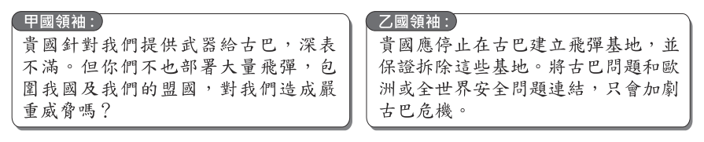
- （A）甲：蘇聯、乙：東德
- （B）甲：西德、乙：美國
- （C）甲：美國、乙：蘇聯
- （D）甲：蘇聯、乙：美國
答案：（D）
詳解與考點
正解：信函內容圍繞古巴飛彈危機，關鍵是古巴飛彈由蘇聯提供、而美國要求拆除飛彈基地。故甲為蘇聯、乙為美國，D 正確。
A：東德不是古巴飛彈危機中與美國直接對峙的主要一方，錯誤。
B：西德與美國並非信函所指的美蘇兩強組合，錯誤。
C：若甲為美國、乙為蘇聯，便與題幹所述提供武器及要求拆除飛彈的一方相反，錯誤。它看起來對，是因為同樣列出美國與蘇聯，但甲、乙位置對調。
本題考點：冷戰對峙——以古巴、飛彈與兩國領袖往來辨識1962年古巴飛彈危機；判斷國家時要核對各方實際行動，不能只看國名組合。
第 20 題
圖(十一)是兩張與天體運行有關的示意圖，下列何者及其說明最能夠代表中世紀（中古）歐洲天文學的主流觀點？
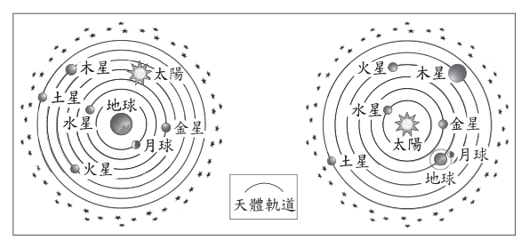
- （A）圖左，因為太陽繞行地球
- （B）圖左，因為水星繞行太陽
- （C）圖右，因為月球繞行地球
- （D）圖右，因為木星繞行太陽
答案：（A）
詳解與考點
正解：中世紀歐洲天文學的主流是地心說，關鍵是地球位於中心、太陽繞行地球。圖左呈現此架構，A 正確。
B：水星繞行太陽的說法屬以太陽為中心的系統，不能代表中世紀主流地心說，錯誤。
C：月球繞行地球雖是正確的局部關係，但不足以代表整個宇宙體系的地心說，錯誤。
D：木星繞行太陽也屬日心系統的描述，不能代表中世紀主流觀點，錯誤。它看起來對，是因為單一星體的運行敘述可能正確，但題目問的是整體宇宙觀。
本題考點：中世紀歐洲天文學——主流地心說以地球為中心，認為太陽與行星繞地球運行；辨識時須看整體中心位置，不只看單一天體關係。
第 21 題
「十四世紀時，由於此物產的生產與銷售，帶動一股商業活動：中國結合自身及波斯生產的原料，製作成具有特色的商品後，由中國銷往印度、埃及、波斯等地。十六世紀起，此物產又由西班牙船隻載運，從馬尼拉運往墨西哥城與利馬；在此同時，歐洲王公貴族對此物產風靡不已，紛紛下單訂作。」此物產最可能是下列何者？
- （A）番薯
- （B）瓷器
- （C）鴉片
- （D）白銀
答案：（B）
詳解與考點
正解：題幹提到中國結合自身及波斯原料製作特色商品，銷往印度、埃及、波斯，後又由馬尼拉運往墨西哥城與利馬，且歐洲貴族紛紛訂作，關鍵是青花瓷與大帆船貿易。此物產是瓷器，B 正確。
A：番薯原產美洲，傳入中國的時間與題示14世紀中國外銷情境不合，錯誤。
C：鴉片不符合以中國、波斯原料製作並供歐洲貴族訂作的商品特徵，錯誤。
D：白銀是貨幣與貿易支付的重要媒介，不是題幹所述可供訂作的特色製品，錯誤。
本題考點：跨區域貿易——以產地、原料、運輸路線和消費用途辨識商品；中國瓷器曾經由海上貿易與馬尼拉大帆船貿易銷往美洲及歐洲。
第 22 題
表(二)呈現五個國家 2010 年某宗教信徒占該國總人口數的比例，根據內容判斷，此宗教的發源地最可能位於圖(十二)中甲、乙、丙、丁何處？
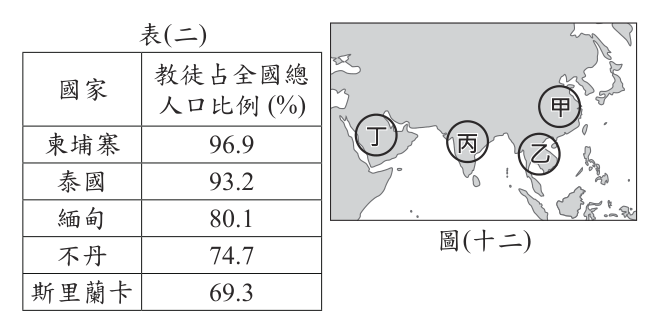
表(二)| 國家 | 教徒占全國總人口比例 (%) |
|---|
| 柬埔寨 | 96.9 |
| 泰國 | 93.2 |
| 緬甸 | 80.1 |
| 不丹 | 74.7 |
| 斯里蘭卡 | 69.3 |
- （A）甲
- （B）乙
- （C）丙
- （D）丁
答案：（C）
詳解與考點
正解：表（二）中柬埔寨96.9%、泰國93.2%、緬甸80.1%、不丹74.7%、斯里蘭卡69.3%的高比例信徒，指向佛教；佛教發源於古印度，對應圖中南亞印度位置的丙，C 正確。
A：甲位於東亞，不是佛教發源地，錯誤。
B：乙位於東南亞，雖有許多佛教信徒國家，但不是佛教起源地，錯誤。它看起來對，是因為表中多個高比例國家位於東南亞。
D：丁位於西亞，非佛教發源地，錯誤。
本題考點：宗教分布與發源地——先由信徒比例高的國家辨識宗教，再區分宗教盛行區與發源地；佛教雖廣布東南亞，發源地在南亞印度。
第 23 題
表(三)是 2022 年 8 月時，我國前四大外籍移工來源國的部分資料：根據表中資料，我們可觀察到關於外籍移工的何種現象？
表(三) 2022 年 8 月我國前四大外籍移工來源國部分資料| 類別 | 產業移工（營建業、製造業、漁業） | 社福移工（看護、家庭幫傭） | 總人數比例 |
|---|
| 國籍 | 越南 | 45.4% | 12.7% | 35.4% |
| 國籍 | 菲律賓 | 25.3% | 12.2% | 21.3% |
| 國籍 | 印尼 | 16.1% | 74.9% | 34.1% |
| 國籍 | 泰國 | 13.2% | 0.2% | 9.2% |
| 性別 | 男 | 71.4% | 0.8% | 49.8% |
| 性別 | 女 | 28.6% | 99.2% | 50.2% |
- （A）外籍移工的勞動權益因國籍而受到差別待遇
- （B）外籍移工從事的工作類別存在明顯性別差異
- （C）我國第二級產業主要外籍移工來源國為印尼
- （D）我國第三級產業主要外籍移工來源國為越南
答案：（B）
詳解與考點
正解：表（三）顯示，產業移工中男性占71.4%、女性占28.6%；社福移工中男性占0.8%、女性占99.2%。關鍵是兩類工作的性別組成差異極大，故可觀察到外籍移工從事的工作類別存在明顯性別差異，B 正確。
A：表中沒有工資、工時或待遇資料，不能推論勞動權益因國籍受差別待遇，錯誤。
C：產業移工來源以越南45.4%最高，印尼為16.1%，錯誤。
D：社福移工來源以印尼74.9%最高，越南為12.7%，錯誤。
本題考點：統計表判讀——先確認百分比所表示的母體，再比較同一欄位的比例；表中產業移工與社福移工的性別組成差異極大，顯示工作類別存在明顯性別差異。
第 24 題
小華整理客廳時發現一疊紙張，如圖（十三）。他拍照上傳到社群網路詢問它的功能，以下是網友的回覆：
甲：「我們稱它為高速公路回數票，以前沒有電子收費系統，經過收費站時將它拿給收費員當通行費。在收費站前減速繳交回數票常會造成塞車，現在用電子收費就沒這個問題了。」
乙：「以前忘了帶錢時，把回數票當現金，少數店家也能接受，我還曾經用它來買便當。」
關於上述高速公路回數票的說明及收費方式的變革，下列敘述何者最適當？
- （A）科技發展使得交通運輸更順暢
- （B）高速公路回數票可在銀行換外幣
- （C）高速公路回數票具延遲支付功能
- （D）科技發展讓交通工具的選擇更多元
答案：（A）
詳解與考點
正解：高速公路回數票須在收費站前減速交給收費員，容易造成塞車；改採電子收費後可免停車通行，關鍵是收費科技改善車流效率。科技發展使交通運輸更順暢，A 正確。
B：回數票是繳納通行費的預付憑證，不能在銀行兌換外幣，錯誤。
C：回數票須先購買再使用，屬預付而非先消費後付款的延遲支付，錯誤。
D：電子收費改變的是繳費方式與通行效率，沒有增加交通工具種類，錯誤。
本題考點：科技與交通——資訊科技可改變收費流程並減少停等時間；付款方式要以付款時點判斷，先付款後使用是預付。
第 25 題
小惠在旅行的過程，曾借宿表（四）中四位親戚家，其中一位旁系血親參選當地的市民代表，因此在借宿的那天晚上，他也參與了掃街拜票。根據上述內容判斷，參選者最可能是表中何者？
表（四）| 行程 | 借宿地點 | 親戚稱謂 |
|---|
| 第一天 | 新北市 | 姨丈 |
| 第二天 | 花蓮縣 | 舅舅 |
| 第三天 | 臺南市 | 姑姑 |
| 第四天 | 彰化縣 | 伯母 |
- （A）姨丈
- （B）舅舅
- （C）姑姑
- （D）伯母
答案：（B）
詳解與考點
本題考點為親屬稱謂的「血親」與「姻親」之分。先就四個選項辨別關係：姨丈（母之姊妹之夫）與伯母（父之兄之妻）皆屬「姻親」，並非血親；舅舅（母之兄弟）與姑姑（父之姊妹）則「同屬旁系血親」（與己身分別同源於外祖父母、祖父母）。因此題幹所稱「旁系血親參選」，可立即排除姨丈與伯母，但「舅舅與姑姑兩者皆為旁系血親」，並無法僅憑血親身分二擇一。真正的判別關鍵在於表（四）所列各親戚的居住地：市民代表須於當地參選，而小惠是在借宿「該晚」隨同掃街拜票，故參選者必為「居住於其參選當地、且小惠當晚借宿其家」之旁系血親。依表（四）內容，符合此條件者為舅舅，故正確答案為B（舅舅）。（註：原解說稱「四人中僅舅舅是旁系血親」並不正確，姑姑同為旁系血親，須以居住地而非血親身分作為判別依據；又本題所附圖檔為移工統計表，並非題幹之表（四），辨題時應以原卷表（四）為準。）
第 26 題
圖（十四）為石門水庫集水區範圍圖，若要針對此水庫的相關問題作整治並進行評估，則下列何者最為合理？
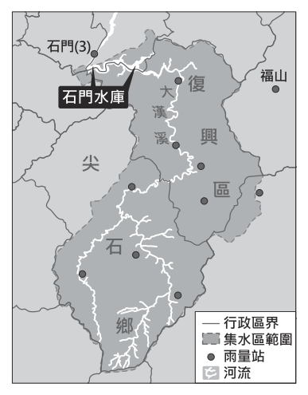
- （A）加強玉山山脈的水土保持可增加水庫使用年限
- （B）福山站附近的崩塌是造成水庫濁度增加的原因
- （C）復興區的土地利用方式將對水庫水質造成影響
- （D）疏濬石門(3)站旁河道的淤沙可維持水庫蓄水量
答案：（C）
詳解與考點
正解：整治水庫須先看集水區範圍，關鍵是復興區位於石門水庫集水區內，其土地利用會隨逕流影響入庫水質。C 最合理。
A：石門水庫集水區屬雪山山脈，不是玉山山脈，錯誤。
B：福山站在集水區外，其附近崩塌不會是造成該水庫濁度增加的直接原因，錯誤。
D：石門（3）站位於壩下游出水端，疏濬該處河道淤沙不能維持水庫蓄水量，錯誤。
本題考點：集水區整治——水庫水質與淤積應優先評估集水區內的土地利用、崩塌與輸砂；先以地圖確認位置是否在集水區及水庫上游。
第 27 題
臺灣製鞋業在國內及海外約有3,000多家工廠，為了拓展製鞋版圖，國內幾家製鞋大廠持續計畫在其他國家籌設新廠。根據製鞋業的產業特色判斷，最可能前往具備下列何種條件的國家設置新廠？
- （A）人口眾多且所得較低
- （B）原料豐富且地廣人稀
- （C）動力充足且市場廣大
- （D）資金豐沛且技術密集
答案：（A）
詳解與考點
正解：製鞋業需要大量人力，關鍵是其勞力密集的產業特色。到人口眾多且所得較低的國家設廠，較容易取得充足且成本較低的勞動力，A 正確。
B：原料豐富與地廣人稀不能滿足製鞋業大量勞工的主要需求，錯誤。
C：動力充足與市場廣大雖有助部分產業，但不是勞力密集製鞋業首要的區位條件，錯誤。
D：資金豐沛且技術密集較適合資本、技術密集產業，和製鞋業特性不符，錯誤。
本題考點：產業區位——勞力密集產業優先考量勞工數量與勞動成本；資本或技術密集產業才較重視資金、技術與研發條件。
第 28 題
圖(十五)呈現雲林縣某一環境災害在前、後兩個時期分布的變化，可以觀察出此災害最嚴重的地區在後期有向某地區轉移的現象，下列何項措施較有助於緩解此災害在後期最嚴重的地區持續惡化？圖(十五)
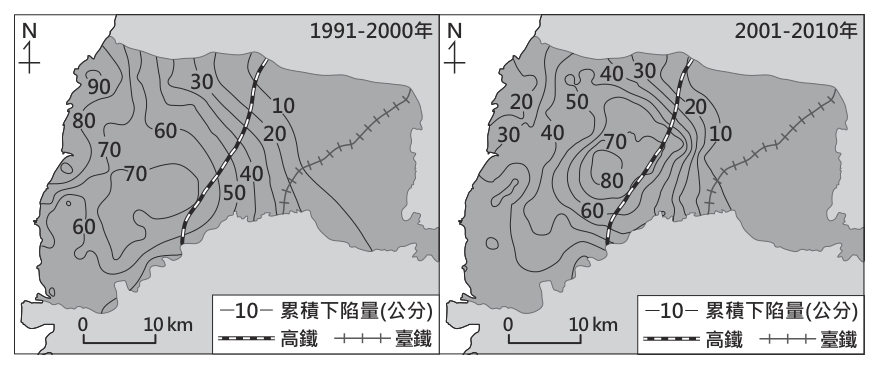
- （A）提高自來水水費以減少用水
- （B）鼓勵在高鐵沿線改種省水作物
- （C）補助受影響居民墊高房舍與路基
- （D）限制臺鐵通過此路段的運量與班次
答案：（B）
詳解與考點
正解：題幹指出災害最嚴重區由沿海轉往內陸高鐵沿線，地層下陷的關鍵成因是灌溉超抽地下水。B 鼓勵高鐵沿線改種省水作物，可減少灌溉抽取地下水，從成因緩解下陷，故 B 為正解。
A：提高自來水水費針對自來水使用，不能直接減少農業抽取地下水，錯誤。
C：墊高房舍與路基只能減輕下陷後的受災影響，未處理地下水超抽的根源，錯誤。
D：限制臺鐵運量與班次和地下水抽取無關，錯誤。
本題考點：地層下陷防治——先由分布轉移判斷受災區的主要用水型態，再找能減少地下水超抽的措施；因應與防治的區別——墊高建物是減災，節水以減抽地下水才是防治。
第 29 題
荔枝為臺灣受歡迎的水果之一，目前主要種植在中南部。政府為了推廣臺灣荔枝，與澳洲合作，推動南半球生產計畫，在澳洲尋找與臺灣荔枝種植的氣候條件相似的地點，並於完成隔離檢疫後開始試種。根據上文，圖（十六）中何處最有可能為試種的地點？
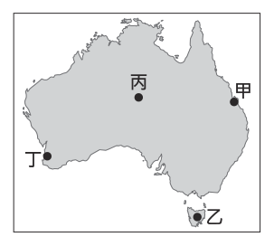
- （A）甲
- （B）乙
- （C）丙
- （D）丁
答案：（A）
詳解與考點
正解：題幹要在澳洲尋找與臺灣中南部荔枝產區氣候相似的試種地，關鍵是溫暖濕潤且雨量充足的副熱帶、熱帶氣候。A 位於澳洲東岸的昆士蘭一帶，符合此條件，故 A 為正解。
B：乙位於塔斯馬尼亞，氣候較涼，不利荔枝生長，錯誤。
C：丙位於澳洲內陸乾燥區，雨量不足，錯誤。
D：丁位於西岸地中海型氣候區，夏季乾燥，與臺灣中南部荔枝產區不相似，錯誤。
本題考點：氣候與農業——作物試種應比對原產地的溫度與降水條件；澳洲氣候判讀——東岸較溫暖濕潤，內陸乾燥，塔斯馬尼亞較涼。
第 30 題
清末某位知識分子提出下述主張：「本世紀女權的問題，關鍵在於政治參與。我認為女子能成為議員，也期望中國在海陸軍、財政部門、外交部門有女性任職，更希望女子能被選舉為總統。我們必須以塑造尊重男女平權的新國民為起點，並追求組織新政權為終極目標。」根據上文，此人認為應採取下列何種作法，最可能創造理想中的女性政治參與環境？
- （A）接受西域的胡人文化
- （B）維護傳統的皇帝制度
- （C）推翻清朝政府建立共和
- （D）效法日本推動君主立憲
答案：（C）
詳解與考點
正解：題文主張女性可任議員、總統與各部門職務，並以「組織新政權」為終極目標；要實現男女平權的政治參與，最符合的是推翻清朝政府、建立共和制度，故 C 為正解。
A：接受西域胡人文化與建立女性政治參與的制度無直接關係，錯誤。
B：維護傳統皇帝制度與題文追求新政權、女性可被選為總統的主張相反，錯誤。
D：君主立憲雖有近代制度改革，仍保留皇帝，不如共和制度符合「選舉為總統」與推翻清朝的訴求，錯誤。它看起來對，是因為兩者都屬近代改革方案，但題文已明確指向共和政體。
本題考點：清末女權與革命思想——女子參政、男女平權與建立新政權相連；政體判讀——出現選舉總統、推翻皇帝制度等線索時，應判斷為共和革命。
第 31 題
圖(十七)是一張十八世紀末的漫畫及其說明，作者所要傳遞的訊息，最可能是下列何者？
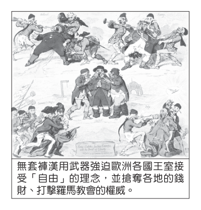
- （A）對北美十三州宣布獨立表示反對
- （B）對德意志帝國擴建海軍備感威脅
- （C）對義大利統一建國運動提出異議
- （D）對法國大革命向外蔓延感到不安
答案：（D）
詳解與考點
正解：漫畫與說明中的「無套褲漢」指法國大革命時的中下階級平民，並描繪其以武器迫使歐洲王室接受自由理念、衝擊教會與財產。這反映法國大革命向外蔓延，使歐洲君主不安，故 D 為正解。
A：北美十三州獨立的主角與「無套褲漢」象徵不同，錯誤。
B：德意志帝國擴建海軍是較晚期的事件，與十八世紀末的漫畫不符，錯誤。
C：義大利統一建國運動並非漫畫中法國平民革命形象所指，錯誤。
本題考點：法國大革命——「無套褲漢」是革命中下階級平民的象徵；革命衝擊——自由、平等理念向外傳播，威脅歐洲君主與舊制度。
第 32 題
「東漢末年戰亂頻仍，知識分子四散遷徙，人才難覓。曹丕在正式建立曹魏政權前，為了改善人才選用方式，於延康元年(220年)實施此方法，在各郡設置中正官，……。」上文中未完的內容，最適合放入下列何者？
- （A）挑選各地賢能者，根據才學德行與資歷表現分為九等
- （B）與耶穌會傳教士進行交流，引進西方科學知識與技術
- （C）長期戰亂導致地方制度轉變，郡縣制度取代封建制度
- （D）主辦地方層級的科舉考試，使平民任官機會逐漸增加
答案：（A）
詳解與考點
正解：題幹的「曹丕」、「延康元年（220年）」、「各郡設置中正官」指向曹魏為選才推行的九品中正制。此制由中正官依才學、德行與資歷評定人物等第並推薦任用，A 符合，故 A 為正解。
B：耶穌會傳教士來華並交流西方科學知識，是明清時期的事，與東漢末至曹魏的選才制度不合。
C：郡縣制度取代封建制度是秦朝的制度變革，不是曹丕設中正官的內容。
D：以考試選才、使平民任官機會增加的科舉制度始於隋代，年代晚於曹魏。
本題考點：九品中正制——曹魏在各郡設中正官，依才學、德行與資歷將人才分為九等並推薦任用；制度判讀——看到「曹丕、220年、中正官」時，應連結九品中正制。
第 33 題
目前的跨洋資訊傳輸多是透過海底電纜，表(五)為四條海底電纜東、西端點的位置資訊。「太平洋光纖電纜網路」為一條橫跨太平洋的海底電纜，該電纜的興建可以提供兩個端點之間龐大的網路流量需求，其中一端還能進一步連接東南亞市場，此條電纜最可能是表中何者？
表(五)| 電纜 | 西側端點所在位置 | 東側端點所在位置 |
|---|
| 甲 | 33.73°S，18.44°E | 5.42°N，100.33°E |
| 乙 | 40.76°N，72.94°W | 50.83°N，4.55°W |
| 丙 | 38.73°N，9.15°W | 31.26°N，32.31°E |
| 丁 | 24.86°N，121.83°E | 33.91°N，118.42°W |
- （A）甲
- （B）乙
- （C）丙
- （D）丁
答案：（D）
詳解與考點
正解：題幹要求找橫跨太平洋、且一端可連接東南亞市場的電纜，須以表中經緯度定位兩端。D 的西側端點為 24.86°N、121.83°E，在臺灣；東側端點為 33.91°N、118.42°W，在北美西岸，正好橫跨太平洋，故 D 為正解。
A：甲由 33.73°S、18.44°E 到 5.42°N、100.33°E，連接範圍跨印度洋，錯誤。
B：乙由北美東岸到歐洲西側，跨越大西洋，錯誤。
C：丙兩端位於歐洲與地中海東側附近，未橫越太平洋，錯誤。
本題考點：經緯度定位——東經、北緯可定位臺灣，西經、北緯可定位北美西岸；海洋判讀——兩端分居臺灣與北美西岸才是橫跨太平洋。
第 34 題
圖(十八)是小安過去的網路貼文，圖(十九)是當時動物之家認養規定的部分內容：圖(十八) 圖(十九) 根據圖(十八)、圖(十九)的內容判斷，小安參與的這兩次投票，先後順序最可能為下列何者？
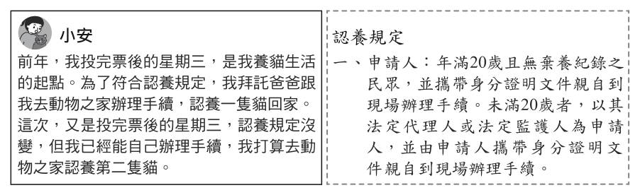
- （A）地方選舉、中央選舉
- （B）地方選舉、公民投票
- （C）中央選舉、公民投票
- （D）公民投票、中央選舉
答案：（D）
詳解與考點
正解：題幹中第一次投票後，認養貓仍須父母代辦；第二次則可自行辦理。依當時動物之家規定，未滿 20 歲須由法定代理人代辦，故兩次投票之間跨過成年門檻；對照全國性投票的先後，最符合的是先公民投票、後中央選舉，故 D 為正解。
A：地方選舉後接中央選舉的時序，無法同時對應題幹所示的投票事件與成年條件。
B：地方選舉後接公民投票，無法吻合題幹中的年代與成年變化。
C：中央選舉後接公民投票，投票先後與題幹情境不符。
本題考點：時序推理——先由生活事件的身分條件判斷是否跨過成年門檻，再比對各投票事件的先後；資料判讀——題幹內的認養規定是推論年齡狀態的關鍵，不可只憑投票名稱猜測。
第 35 題
近年甲國新聞中常見關於殺人案件的報導，許多人因而認為治安不斷惡化，要求主管機關首長下臺負責。曉晴想探究該國社會治安情況，在網路上搜尋到的資料如圖(二十)，圖中顯示甲國近年殺人案件數，以及用「殺人」為關鍵詞搜尋國內網路新聞的搜尋結果數。根據上述內容判斷，下列何者最可能是他探究的結論？
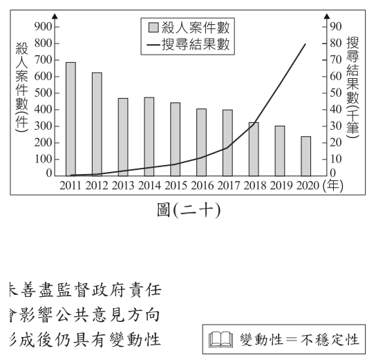
- （A）社會治安不斷惡化顯示媒體未善盡監督政府責任
- （B）媒體與社群網路的報導內容會影響公共意見方向
- （C）公共意見雖經過反覆討論但形成後仍具有變動性
- （D）閱聽大眾喜好常會影響新聞媒體產業的企業收入
答案：（B）
詳解與考點
正解：題幹要比較實際殺人案件與新聞搜尋結果，關鍵是案件數下降、相關報導量卻上升。圖中殺人案件約由 2011 年的 680 件降至 2020 年的 240 件，民眾仍因「殺人」新聞大量增加而認為治安惡化，顯示媒體與社群網路報導會影響公共意見方向，故 B 為正解。
A：案件數下降且報導量增加，不能推論媒體未善盡監督政府責任，錯誤。
C：題圖呈現的是案件與報導量的落差，不是在討論公共意見形成後是否變動，錯誤。
D：題圖沒有媒體收入或閱聽偏好的資料，錯誤。
本題考點：媒體與公共意見——比較客觀事件數與報導量，若兩者趨勢不同，須辨別報導對認知的影響；資料判讀——不可把媒體關注度直接當成事件發生頻率。
第 36 題
我國少子化與高齡化的情況日益嚴重，未來恐面臨勞動力不足的危機。政府除了促進人口成長以減緩影響程度外，根據人力運用調查資料顯示，2018年時約有150萬的壯年人口，因須承擔無酬勞動而未就業，有學者建議可設法提高這些人參與市場勞動的意願。根據上述內容判斷，下列何者最可能是該學者的建議之一？
- （A）延後高齡勞工的退休年齡
- （B）廣設優質平價的托育機構
- （C）增加中小企業的就業機會
- （D）健全國際志工的培訓制度
答案：（B）
詳解與考點
正解：題幹鎖定約 150 萬因無酬勞動而未就業的壯年人口，關鍵在家務與照護責任阻礙其進入職場。B 廣設優質平價托育機構可分擔育兒照護、降低家庭負擔，提升這群人參與市場勞動的意願，故 B 為正解。
A：延後退休針對高齡勞工，未直接處理壯年人口的無酬照護負擔，錯誤。
C：增加中小企業職缺雖增加工作機會，卻未解除無法就業的照護根源，錯誤。
D：國際志工培訓與壯年人口的無酬家務、照護無關，錯誤。
本題考點：勞動參與——須先找出未就業者的限制因素；無酬勞動與托育——以可負擔的照護服務分擔家務與育兒，才能提高勞動參與。
第 37 題
中國實施「一帶一路」政策規畫了許多經濟走廊，圖 (二十一)為部分經濟走廊示意圖。其中有一條的規畫目的，除可降低從波斯灣運石油至中國須經印尼、馬來西亞間海峽及南海的風險外，也兼具促進中國西部地區與西亞、南亞國家的能源和貿易往來，此經濟走廊最可能為圖中何者？
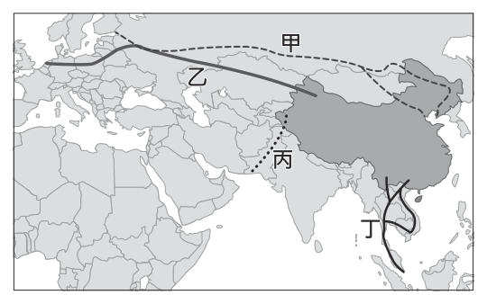
- （A）甲
- （B）乙
- （C）丙
- （D）丁
答案：（C）
詳解與考點
正解：繞開印尼、馬來西亞間海峽及南海，並連結中國西部與西亞、南亞的能源、貿易往來。由中國西部經巴基斯坦通往阿拉伯海的中巴經濟走廊可降低石油海運必經該海峽與南海的風險，對應圖中的丙，故選 C。
A：甲所示走廊偏向中亞、歐洲方向，不能直接由巴基斯坦出海以避開題幹所述航線。
B：乙亦偏中亞、歐洲方向，不符連結西部與南亞出海的條件。
D：丁偏向東南亞，仍與題幹要避開南海及經印尼、馬來西亞間海峽的目的不合。
本題考點：一帶一路經濟走廊判讀——先抓取「中國西部」、「巴基斯坦」與「阿拉伯海」等空間線索；能由陸路通往阿拉伯海、降低麻六甲海峽與南海航運風險者，是中巴經濟走廊。
第 38 題
「自來水管在租界內埋設，沿街每十數步設置四尺高的吸水鐵桶，鐵桶下面與水管連接，使用時將鐵桶上的機關轉開，水就會激射而下。自來水管理單位有兩處，法國租界的管理處設在萬安里，英國租界的管理處就設在儲水的水塔旁邊。管線外需要用水的居民也可以請水夫外送，不論遠近，每擔水都收十文錢。」上述最可能是描寫下列何者的情形？
- （A）十八世紀初的北京
- （B）十八世紀末的廣州
- （C）十九世紀初的廈門
- （D）十九世紀末的上海
答案：（D）
詳解與考點
正解：題幹同時出現「法國租界」、「英國租界」與自來水管、水塔等近代設施，應以近代通商口岸的租界情境判斷。上海在鴉片戰爭後開埠，19世紀中葉至20世紀初租界制度盛行；19世紀末的上海已具這類自來水設施，故 D 為正解。
A：18世紀初的北京尚不符合英、法租界並存及近代自來水管線的情境，錯誤。
B：18世紀末的廣州雖有對外貿易，題幹所述的英、法租界與設施年代不合，錯誤。
C：19世紀初的廈門早於鴉片戰爭後的開港與租界發展，錯誤。
本題考點：近代中國通商口岸——看到「租界」須連結鴉片戰爭後的開埠城市；時空判讀——英、法租界與近代自來水設施同時出現時，應排除18世紀及19世紀初的選項。
第 39 題
藍蟹原產於美洲，因國際貿易蓬勃發展，透過船舶的壓艙水被帶往地中海，由於該地氣候適宜生長又缺乏天敵，藍蟹數量大幅增加，而使原生物種的生存空間受到擠壓。在法國地中海沿岸，藍蟹已成為常被捕捉到的漁獲，但這項食材在該國的食用者很少，使漁民生計受到衝擊；反觀北非突尼西亞，在原本漁獲減少的情況下，漁民轉而捕捉藍蟹販售，結果獲得不錯的收入。上述關於二國漁民處境的內容，其所探討的主題最可能為下列何者？
- （A）漁民如何在市場競爭中受惠
- （B）漁民如何應對外來文化的衝擊
- （C）全球化現象如何影響漁民的生活
- （D）資訊科技發展如何便利漁民的生活至船艙的海水或河水。
答案：（C）
詳解與考點
正解：題幹從國際貿易船舶壓艙水帶入藍蟹，寫到法國與突尼西亞漁民生計受到不同影響，關鍵是跨國流動改變在地生活。這正是全球化現象如何影響漁民生活，故 C 為正解。
A：文中比較的是外來藍蟹造成的生計衝擊，不是漁民在市場競爭中如何受惠，錯誤。
B：藍蟹是外來物種，非外來文化，錯誤。
D：文中提及船舶壓艙水與國際貿易，沒有資訊科技便利漁民生活的內容，錯誤。
本題考點：全球化影響——人員、物資與物種可隨跨國運輸流動；外來物種衝擊——同一物種進入不同地區，可能因市場條件不同而造成不同生計結果。
第 40 題
我國某地方法院在一段時間內的刑事案件判決件數，以及其中屬於非告訴乃論刑事案件判決的件數，如圖 (二十二)。當地調解委員會在同一段時間內，也順利調解了許多刑事案件。若上述調解成立的案件，當初都沒能調解成功，且這些案件皆改由該地方法院作出判決，則關於圖中甲、乙線段的位置，下列何種變化最可能發生？
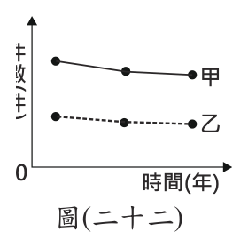
- （A）甲線段上移，乙線段上移
- （B）甲線段上移，乙線段不變
- （C）甲線段下移，乙線段上移
- （D）甲線段下移，乙線段不變
答案：（B）
詳解與考點
正解：題幹問原本調解成立的刑事案件若都改由法院判決，須分辨甲、乙代表的案件範圍。甲是刑事判決總件數，乙是其中非告訴乃論刑事案件件數；刑事調解成立的是告訴乃論案件，改由法院判決會使甲增加，而乙不受影響，故 B 為正解。
A：乙所代表的非告訴乃論案件不因告訴乃論案件調解失敗而增加，錯誤。
C：調解失敗後案件改由法院判決，總件數應增加，甲不會下移，錯誤。
D：甲同樣不會下移，錯誤。
本題考點：告訴乃論與調解——調解成立影響的是告訴乃論案件；集合關係判讀——總件數增加而子集合件數不變時，總數線上移、子集合線維持原位。
第 41 題
英國的英格蘭足球超級聯賽，在最接近11 月11日的比賽日，會舉辦紀念活動：比賽前由軍人、球員與觀眾一起進行默哀儀式，各隊球衣上印有紅花圖案，其餘參與者也在衣服上別著紅花。這是因為英國及其殖民地為紀念第一次世界大戰犧牲將士，將11月11日訂為紀念日，許多殖民地在獨立後，仍保留此節日。根據上文，下列何者最可能保有同樣的紀念活動？
- （A）澳洲職業足球聯賽
- （B）巴西足球甲級聯賽
- （C）荷蘭足球甲級聯賽
- （D）韓國職業足球聯賽
答案：（A）
詳解與考點
正解：題幹明示 11 月 11 日紀念活動源自英國及其殖民地的一戰紀念傳統，須找曾為英國殖民地且獨立後仍保留該節日的地區。澳洲具有英國殖民歷史，並保有 Remembrance Day 紀念，故 A 為正解。
B：巴西主要是葡萄牙殖民地，不符合英國殖民遺留的線索，錯誤。
C：荷蘭不是英國殖民地，錯誤。
D：韓國不是英國殖民地，錯誤。
本題考點：殖民文化遺留——殖民地獨立後仍可能保留宗主國傳入的節日與制度；歷史判讀——先依題幹鎖定英國殖民地，再比對各地殖民經驗。
第 42 題
1970年11月恆河出海口附近出現一座長3.5公里、寬3公里，最高點僅2公尺的沙洲島，因其位處印度與孟加拉領海交界處，引發兩國領土爭議，但在爭議還未解決之前，這座島嶼就消失了。根據當地自然環境判斷，該島嶼形成的原因最可能是下列何者？
- （A）位處板塊接觸帶，海底火山噴發
- （B）恆河集水區的水土保持持續改善
- （C）恆河河口附近的海平面持續上升
- （D）豪雨侵襲，河流帶來大量堆積物
答案：（D）
詳解與考點
正解：題幹指出沙洲島出現在恆河出海口，且最高僅2公尺；河口沙洲由河流攜帶泥沙堆積形成，豪雨會增加河流搬運與堆積物量，最可能形成短暫沙洲，故 D 為正解。
A：恆河河口位於廣大沖積平原與三角洲，非以板塊接觸帶的海底火山噴發形成沙洲。
B：集水區水土保持改善會減少河流挾帶的泥沙，反而不利沙洲形成。
C：海平面持續上升可使低平沙洲島消失，卻不是其形成的主要原因。它看起來對，是因為題幹提到島嶼後來消失，但題目問的是形成原因。
本題考點：河口堆積地形——河流流速在入海處降低時，泥沙容易堆積成沙洲或三角洲；豪雨增加輸砂量可促成堆積；海平面上升主要影響低平島嶼的存續。
第 43 題
表(六)為臺灣某時期四個主要港口，每十年的輸出額總和。根據表中資料，下列何者的推論最恰當？單位：十萬元 1896-1905 年 1906-1915 年 1916-1925 年 1926-1935 年對外國對日本對外國對日本對外國對日本對外國對日本表(六) 1,215 2,375 2,112 5,578 0.5 8,912 2,321 9,260 0.2 479 13,440 年分港口基隆港淡水港安平港打狗港
表(六)| 年分 港口 | 1896-1905 年 | 1906-1915 年 | 1916-1925 年 | 1926-1935 年 |
|---|
| 對外國 | 對日本 | 對外國 | 對日本 | 對外國 | 對日本 | 對外國 | 對日本 |
| 基隆港 | 90 | 312 | 506 | 1,215 | 2,112 | 5,578 | 2,321 | 9,260 |
| 淡水港 | 708 | 5 | 563 | 7 | 467 | 0.5 | 157 | 0.2 |
| 安平港 | 144 | 135 | 49 | 259 | 25 | 67 | 16 | 65 |
| 打狗港 | 25 | 176 | 45 | 2,375 | 831 | 8,912 | 479 | 13,440 |
- （A）打狗港的輸出額變化，可能受到殖民母國對糖業的資本挹注影響
- （B）由於基隆離日本較近，其港口對殖民母國的輸出額占比較南部多
- （C）表中各港口占臺灣對外輸出額比重，與十八世紀後期的情況相仿
- （D）表中各港口輸出額的變動，應與當時的統治者推動十大建設有關二、題組：(44～54題)
答案：（A）
詳解與考點
正解：表中時間為1896-1935年，殖民母國為日本；打狗港對日輸出額由176大幅增至13,440，顯示其輸出成長與日治時期日本資本投入南部糖業、糖品大量輸日的情況相符，故 A 最恰當。
B：港口對日輸出額占比須由表中各港數值比較，不能只憑基隆離日本較近便推論其占比較南部高，錯誤。
C：表中是日治時期的港口貿易資料，不能直接推成與十八世紀後期情況相仿，錯誤。
D：十大建設是戰後推動的政策，與1896-1935年的日治時期不符，錯誤。
本題考點：日治臺灣經濟——1896-1935年殖民母國為日本；史料推論——以港口輸出額的變化連結當時產業與資本投入，不可用地理直覺或不同時代政策取代資料判讀。
第 44 題
文中巫童悲劇的發生，主要反映出下列何種現象？
- （A）文化的差異形成文化位階
- （B）法律的強制力高於宗教信仰
- （C）民眾行為會受到社會規範影響
- （D）公共意見是經由反覆辯論而形成
答案：（C）
詳解與考點
正解：題幹描述信眾受宗教迷信影響，將巫童認定、遺棄與凌虐視為可接受的行為，關鍵在群體共同信念規範了個人行動。這最能反映民眾行為受到社會規範影響，故 C 為正解。
A：文化位階是將文化分出優劣高低，題文重點不是文化比較，錯誤。
B：題文未討論法律強制力與宗教信仰何者較高，錯誤。
D：題文不是描述公共意見經反覆辯論而形成，錯誤。
本題考點：社會規範——群體共享的價值與信念會引導、制約個人行為；現象判讀——當人們因「大家深信如此」而採取行動，應優先辨識社會規範的作用。
第 45 題
文中關於巫童所受待遇的描述，最能凸顯下列何者的重要性？
- （A）基本人權應受到普遍性的保障
- （B）公權力的行使應受到法律約束
- （C）自由信仰宗教的權利應受法律保障
- （D）政府的權力應相互制衡以避免濫權
答案：（A）
詳解與考點
正解：題幹中的孩童因被認定為巫童而遭遺棄、收費驅魔與凌虐，直接侵害其生命、尊嚴與安全。無論文化或宗教信仰差異，基本人權都應受普遍保障，故 A 為正解。
B：公權力受法律約束是限制政府權力的原則，題文主要是宗教團體與家庭侵害兒童，錯誤。
C：宗教自由不能成為凌虐兒童的理由，且題文凸顯的是兒童權利受害，錯誤。它看起來對，是因為事件涉及宗教儀式，但題目問的是受害待遇所凸顯的人權。
D：權力制衡處理政府不同權力間的關係，與題文不符，錯誤。
本題考點：基本人權的普遍性——每個人不分文化、宗教與身分，均應享有基本保障；人權衝突判斷——宗教或習俗不能正當化侵害兒童生命、尊嚴與安全。
第 46 題
根據文中第一段內容判斷，相較於電動機車，部分民眾喜愛使用電動自行車的原因，最可能為下列何者？
- （A）該產品的市場競爭程度日漸提升
- （B）選擇使用該項產品的機會成本較低
- （C）受匯率變化影響，產品販售價格調降
- （D）負向誘因增加，民眾使用產品意願提高
答案：（B）
詳解與考點
正解：題幹比較修法前的電動自行車與電動機車，並列出不須車牌、不須駕照、無年齡限制且價格低廉等條件，這些都降低選擇它所放棄替代方案的代價。其機會成本較低，故 B 為正解。
A：使用者增加看似可能來自市場競爭提升，但題幹列的是免牌照、免駕照、無年齡限制與價格低廉等個人選擇成本，沒有市場競爭程度的資訊，錯誤。
C：題幹沒有匯率變動或售價調降的資訊，錯誤。
D：負向誘因如罰則會降低使用意願，不會提高意願，錯誤。
本題考點：機會成本——在不同選擇中，比較放棄最佳替代方案的代價；消費選擇——免牌照、免駕照與低價格會降低使用成本，因而提高選用意願。
第 47 題
文中政府於2022年4月所做的變革，其過程須經下列哪一程序？
- （A）公民投票複決
- （B）憲法法庭審理
- （C）行政機關移請覆議
- （D）中央立法機關通過
答案：（D）
詳解與考點
正解：題幹所述是修正《道路交通管理處罰條例》，關鍵詞是「條例」與「由總統公布」；法律修正須由立法院這一中央立法機關通過，再由總統公布。D 符合法律修正程序，故為正解。
A：公民投票複決不是一般法律修正必經程序，錯誤。
B：憲法法庭審理的是憲法爭議，不負責通過法律修正，錯誤。
C：行政機關移請覆議是行政院對立法院決議的程序，不是本案修法必經程序；它看起來對，是因為行政機關確實參與法案推動，但法律能否通過仍須由立法院議決。
本題考點：法律制定與修正程序——法律案須經立法院通過，再由總統公布；權力機關辨析——立法院行使立法權，憲法法庭處理違憲爭議，行政院覆議則是特定的憲政程序。
第 48 題
根據文中內容判斷，在修正規定施行前已持有微型電動二輪車者，關於其領用車牌的敘述，下列何者最適當？
- （A）最晚要在2024年5月3日領用車牌，以免遭受行政處罰
- （B）最晚要在2024年5月3日領用車牌，以免遭受刑事處罰
- （C）最晚要在2024年11月29日領用車牌，以免遭受行政處罰
- （D）最晚要在2024年11月29日領用車牌，以免遭受刑事處罰
答案：（C）
詳解與考點
正解：題幹明示修正規定在 2022 年 11 月 30 日正式施行，施行前已持有者須在施行後 2 年內領牌。從 2022 年 11 月 30 日起算，2 年期限屆滿前的最後一天是 2024 年 11 月 29 日；逾期由主管機關開罰，屬行政處罰，故 C 為正解。
A：2024 年 5 月 3 日是把期限誤從 2022 年 5 月 4 日公布日附近起算，未依正式施行日計算，錯誤。
B：除起算日誤判外，主管機關開罰屬行政處罰，非刑事處罰，錯誤。
D：期限日期正確，但處罰種類誤作刑事處罰，錯誤。
本題考點：法規期限計算——有明定施行日者，應從正式施行日起算；行政罰辨識——由主管機關開罰是行政處罰，須與刑事處罰區分。
第 49 題
根據上文及觀察圖(二十三)中不同年分各州眾議員席次的變化情形，可以推論圖(二十三) 美國人口在這段期間有下列何項變動？
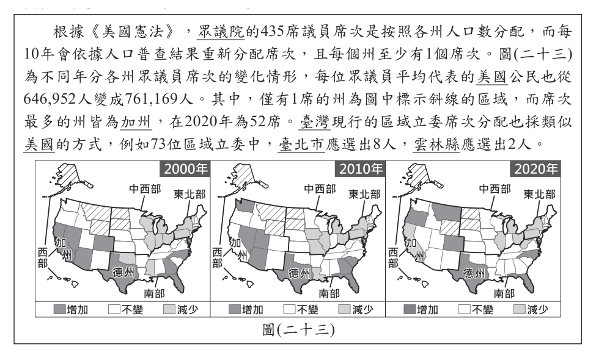
- （A）南部州人口成長速度較東北部的州快
- （B）美國各州持續呈現人口負成長的狀態
- （C）加州因國際移民眾多而人口成長加快
- （D）禁止移民的政策主導德州人口的變化
答案：（A）
詳解與考點
正解：題幹說美國眾議員席次按各州人口分配，應以席次增減推論人口相對變化。比較 2000 年與 2020 年，南部各州席次增加、東北部各州席次減少，表示南部州人口成長速度較東北部快，故 A 為正解。
B：各州席次有增有減，不能推論各州都持續人口負成長，錯誤。
C：加州席次變化只能反映相對人口變動，無法從圖文斷定原因是國際移民眾多，錯誤。
D：德州席次變化也不能單憑圖文歸因於禁止移民政策，錯誤。
本題考點：人口與代表席次——席次依人口普查重分配，席次增加表示人口相對成長較快；資料推論界限——圖表可判讀人口變動，不能自行斷定移民或政策等單一成因。
第 50 題
影響美國各州人口多寡的因素眾多且不相同，觀察圖(二十三)中2020年眾議院席次僅有1席的州，下列何者與這些州人口少的原因較無關聯？
- （A）地形崎嶇
- （B）工業就業機會少
- （C）位居高緯且氣候嚴寒
- （D）深受殖民地式經濟影響
答案：（D）
詳解與考點
正解：題幹要找 2020 年僅有 1 席眾議員的低人口州之成因中「較無關聯」者。這些州多有山地崎嶇、高緯嚴寒或工業就業機會少等條件；殖民地式經濟不是這些美國低人口州的共同主要成因，故 D 為正解。
A：地形崎嶇會提高交通與開發困難，可能使人口較少，錯誤。
B：工業就業機會少會降低人口聚集誘因，錯誤。
C：高緯嚴寒的氣候條件不利居住與產業發展，可能造成低人口，錯誤。
本題考點：人口分布——地形、氣候與就業機會都會影響人口聚集；逆向選擇——題目問「較無關聯」時，應先確認其餘選項能否合理解釋人口稀少。
第 51 題
根據上文並參考圖(二十四)臺灣人口分布狀況，下列關於各行政區立委席次分配的說明何者正確？
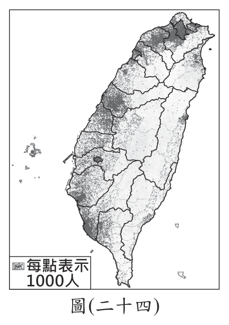
- （A）屏東縣區域立委席次少於臺東縣
- （B）新北市區域立委席次多於宜蘭縣
- （C）彰化縣區域立委席次為全臺最少
- （D）臺南市區域立委席次為全臺最多
答案：（B）
詳解與考點
正解：題幹以行政區人口分配區域立委席次，關鍵判準是在各行政區至少1席等法定分配規則下，依人口資料比較席次，不能把人口與席次理解成毫無例外的嚴格比例。圖中顯示新北市人口約400萬，遠多於宜蘭縣約45萬；新北市區域立委12席，也多於宜蘭縣1席，故B為正解。
A：屏東縣人口約81萬，多於臺東縣約21萬，區域立委席次應多於臺東縣，不會較少，錯誤。
C：彰化縣人口逾百萬、區域立委4席；人口較少的連江縣、澎湖縣、臺東縣、宜蘭縣等有1席，彰化縣並非全臺最少，錯誤。
D：依圖中人口與席次資料，新北市區域立委席次最多，並非臺南市，錯誤。
本題考點：人口分布與民意代表席次——在最低席次保障與法定分配規則下，依圖中人口資料比較各行政區席次；圖表判讀——先比行政區人口，再核對實際席次，不以縣市面積或名稱推測。
第 52 題
根據上文，「新電影」出現之前的戰後臺灣電影，最不可能播映下列何種劇情？
- （A）中國明朝年間，來自各路的武功高手在龍門客棧展開激烈戰鬥
- （B）國軍將領對抗日軍時陣亡，蔣中正題字「英烈千秋」表示悼念
- （C）男主角與豪門望族的女兒產生戀情，並捲入家族間的恩怨情仇
- （D）主角因二二八事件遭到軍警處決，留下妻小長期受到政府監視
答案：（D）
詳解與考點
正解：題幹指出「新電影」之前的戰後臺灣電影受官方意識形態與審查限制，且新電影才開始有意識挑戰政治禁忌；二二八事件涉及政府政治禁忌，主角因此遭軍警處決並受政府監視的劇情最不可能播映，故 D 為正解。
A：武俠片在 1970 年代已走入民眾休閒娛樂，並非當時最不可能播映的題材。
B：國軍將領抗日、以「英烈千秋」悼念的劇情可配合官方意識形態，較可能播映。
C：愛情與家族恩怨屬通俗劇情，與政治禁忌無直接衝突，較可能播映。
本題考點：戰後臺灣電影——1950 年代至新電影前受官方意識形態與審查影響；政治禁忌——涉及二二八事件等挑戰官方敘事的題材，在當時公開播映的可能性低。
第 53 題
根據上文，「新電影」發展之初，最可能以下列何者作為電影題材？
- （A）宣揚政府推行南進政策所帶來的經濟成就
- （B）關注一般農民、勞工等小人物生活中的困頓
- （C）受到美援影響，將美國流行文化作為劇情主軸
- （D）重視原住民文化，發揚原住民族音樂與神話傳說
答案：（B）
詳解與考點
正解：題幹明示臺灣新電影初期融入鄉土文學、強調自然寫實，並有意識挑戰官方政治禁忌。鄉土文學常關注農民、勞工等小人物的生活困頓，因此 B 最符合，故 B 為正解。
A：南進政策是日治時期政策，與 1980 年代初期的新電影取向不符，錯誤。
C：美援影響較可連結 1950 至 1960 年代的背景，非新電影初期的主要題材，錯誤。
D：原住民族文化並非題幹所述新電影初期的主軸，錯誤。
本題考點：臺灣新電影——初期受鄉土文學影響，重視自然、寫實與庶民生活；時代辨識——須將 1980 年代新電影與日治南進、1950 年代美援等不同背景分開。
第 54 題
上文「削蘋果事件」中，國家企圖限制的人民權利類型，與下列何者最相似？
- （A）對法庭上的被告宣告褫奪公權
- （B）剝奪貪污罪犯應考公職的資格
- （C）禁止過度血腥暴力影像的出版
- （D）要求外國旅客入境應接受審查
答案：（C）
詳解與考點
正解：削蘋果事件中，官方要求電影刪減呈現臺北違建的畫面，限制的是創作者以影片表達與出版的自由。C 禁止過度血腥暴力影像出版，同樣限制出版自由，性質最相近，故 C 為正解。
A：褫奪公權是限制政治權利，非限制表達或出版，錯誤。
B：剝奪應考公職資格涉及服公職權，非出版自由，錯誤。
D：外國旅客入境審查涉及入境與遷徙管理，非表達自由，錯誤。
本題考點：表達自由——言論、出版與創作的限制屬同一權利類型；權利類型判讀——先辨識受限制的是影片內容，再找同樣限制出版內容的選項。
其他年度
回到國中教育會考社會的年度總覽，
或到國中教育會考題庫首頁看其他科目。
題目與標準答案出自心測中心 會考歷屆試題（依著作權法 §9，考試試題不受著作權保護）。依中華民國《著作權法》第 9 條第 1 項第 5 款，
依法令舉行之各類考試試題不得為著作權之標的，得自由利用。詳解為 AI 整理的學習輔助，
並非官方標準答案；中華民國會修訂，引用前請對照現行版本查證。